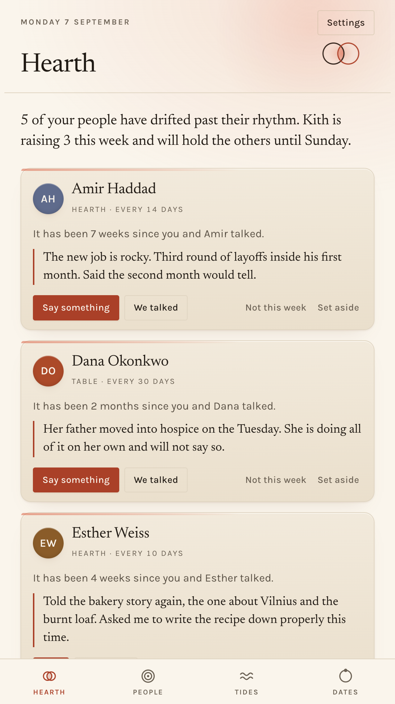
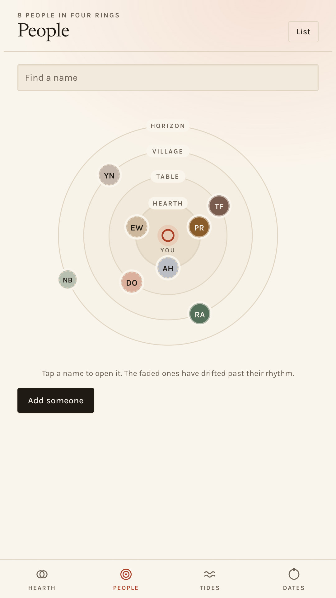
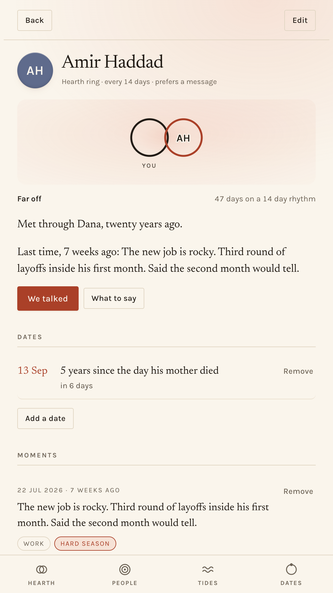
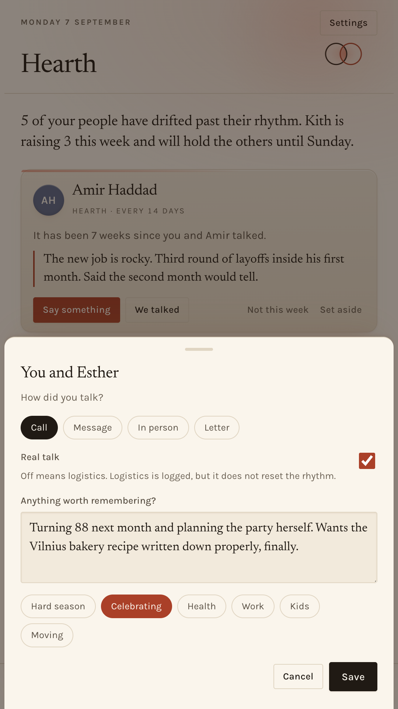
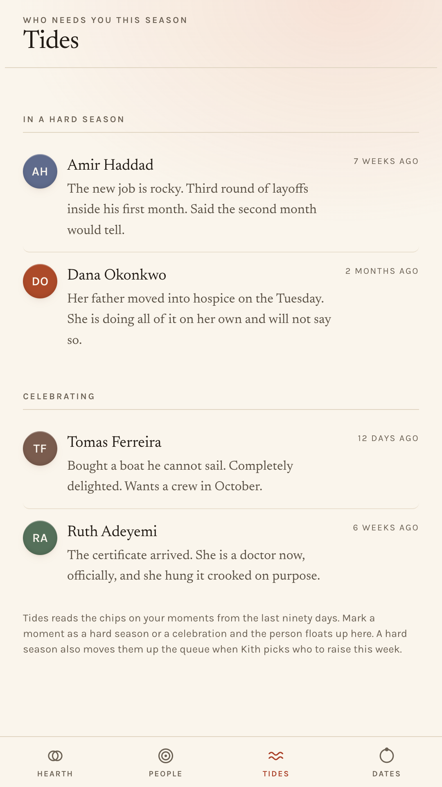
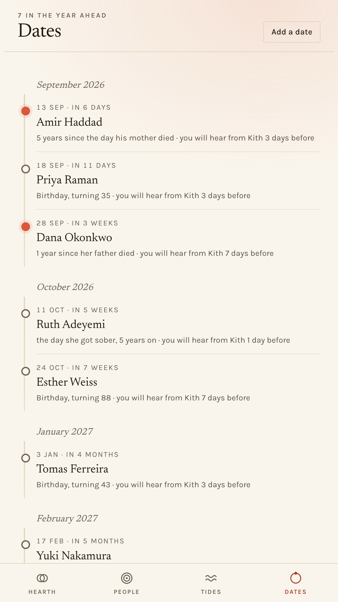

A notebook for the friendships you mean to keep. It holds the names, the rhythms and the details, and tells you gently when someone has drifted.
Get it on Google PlayFree and complete. No account, no subscription, and no internet permission at all.

It is eleven at night, a photograph of an old friend comes past, and you do the arithmetic.
Eight months? A year? You love these people. You are simply bad at the logistics of loving them, because memory was built for a village and your people are spread across four apps and three time zones. That is not a character flaw. It is a filing problem, and filing problems have solutions.
Attention is finite. Kith asks you to spend it on purpose. Everyone you add sits in one of four circles, and each circle carries its own idea of how often is often enough. You can override any of it, per person, in a tap.
The people you would call from a hospital. About five of them, if you are lucky.
Close friends. The ones you would tell first.
Real friendships that need tending to stay real.
People worth not losing. A year is not neglect at this distance. It is a rhythm.

“Text Amir” is friction. “Ask Amir how the second month at the new job went” is a message that writes itself. Kith carries the detail forward, because you wrote it down fifteen seconds after the last call.




Friday is one year since Dana's father died. Even a line means a lot.
Birthdays, of course. But intimacy is made of the other days too: the anniversary of a death, the day someone got sober, the day the citizenship came through, the day you met in the rain in Osaka.
Mark them once, choose how many days of warning you want, and Kith will tell you before the day arrives rather than after. Showing up on those days is the entire point of the app.
Architecture, not a promise
There is no contacts permission and no contact picker in the app. Every name in Kith was typed by you, one at a time. Slower to start, and the only version of this idea that is not creepy.
Kith cannot read either, and does not ask. A catch up exists because you said it happened. If you save a number, Kith fills in your own dialler or messaging app and then gets out of the way. You press send, and Kith never learns whether you did.
Kith does not request the INTERNET permission. It cannot upload anything, because Android will not let it open a connection at all, and you can check that on the Play listing before you install. No account, no sync, no analytics, no crash reporter, no advertising ID.
No read receipts, no reply rates, nothing about whether they wrote back. Kith measures what you give, never what you get. Instrumenting your friends would be surveillance with extra steps.
Software for the five, the fifteen and the fifty who actually matter.
Get it on Google Play